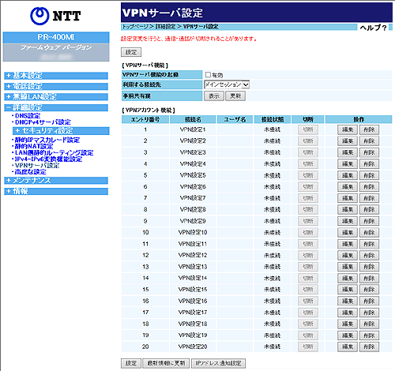

|
VPNサーバ設定により、本商品と通信機器端末をVPN接続することができます。 |
| ※「Web設定」画面に表示されているボタンについての説明は こちら |
|  |
| ［VPNサーバ設定］ | ||
| VPNサーバの設定を行います。 | ||
| VPNサーバ機能の起動を有効にする場合にチェックします。 | |
| VPN接続するのに利用する接続先を設定します。 | |
| 【表示】現在使用している事前共有鍵を表示します。 | |
| 【更新】新たに事前共有鍵を作成し設定します。 | |
＜ご注意＞
|
| ［VPNアカウント設定］ | ||
| VPN接続できる通信機器端末のVPNアカウント設定を行います。 VPNアカウントは最大20件まで登録することができます。 |
||
| ＜VPNアカウントを新規登録する場合＞ | |
| 未登録アカウントの行末にある［編集］をクリックする 「VPNサーバ設定 エントリ編集」画面が表示されます。 「ユーザ名」と「パスワード」を入力後、［設定］をクリックする ※「接続名」も変更することができます。 |
|
| ＜VPNアカウントを変更する場合＞ | |
| 変更したいアカウントの行末にある［編集］をクリックする 「VPNサーバ設定 エントリ編集」画面が表示されます。 変更後、［設定］をクリックする |
|
| ＜VPNアカウントを削除する場合＞ | |
| 削除したいアカウントの行末にある［削除］をクリックする | |
| ＜VPNサーバの最新状態を確認する場合＞ | |
| ［最新情報に更新］をクリックする | |
| ＜IPアドレス通知設定を編集する場合＞ | |
| ［IPアドレス通知設定］をクリックする 「IPアドレス通知設定」画面が表示されます。 各設定項目を設定後、［設定］をクリックする |
|
| 設定したVPNアカウントの接続先名を表示します。 | |
| 設定したVPNアカウントのユーザ名を表示します。 | |
| VPNアカウントの接続状態を表示します。 | |
| ［切断］をクリックすると、VPNアカウントの接続を切断します。 | |
| ［編集］をクリックすると、VPNアカウントの新規作成、または変更をします。 ［削除］をクリックすると、設定したVPNアカウントを削除します。 |
|
| ※「Web設定」画面に表示されているボタンについての説明は こちら |
| ［VPN接続の設定］ | ||
| VPNアカウントの設定を行います。 | ||
| VPNアカウントの接続名です。 初期値では「VPN設定1〜20」が設定されています。 わかりやすい接続名に変更することができます。 |
|
＜お知らせ＞
|
| VPNサーバに接続するときの認証用ユーザ名を入力します。 半角の英数字で最大31文字まで入力可能です。 |
|
| VPNサーバに接続するときの認証用パスワードを入力します。 半角の英数字で最小8文字、最大31文字まで入力可能です。 |
|
| ［IPアドレス通知設定］ |
|
本商品にVPN接続する通信機器端末宛にVPNの接続先情報として本商品のIPアドレスを電子メールで通知する機能です。 |
| ※「Web設定」画面に表示されているボタンについての説明は こちら |
| ＜IPアドレス通知設定を行う場合＞ | |
| メール機能の「有効にする」をチェックする 各設定項目を設定後、［設定］をクリックする |
|
| ＜メール通知ログを表示する場合＞ | |
| ［メール通知ログ］をクリックする 「メール通知ログ」画面が表示されます。 |
|
| ［メール機能］ |
| IPアドレス通知メール機能を設定します。 | |
| ［サーバ設定］ |
| ご利用になるメールアドレスのSMTPサーバ名を入力します。 半角の英数字と記号で入力可能です。 |
|
| ご利用になるメールアドレスのポート番号を入力します。 半角の数字で1〜65535まで入力可能です。 |
|
| プロバイダから通知されたメールアドレスを入力します。 半角の英数字と記号で入力可能です。 |
|
| ［認証設定］ |
| メール（SMTP）サーバとの認証を有効に設定します。 | |
| プロバイダから指定されたメール（SMTP）サーバ認証用アカウント名を入力します。 半角の英数字と記号で入力可能です。 |
|
| プロバイダから指定されたメール（SMTP）サーバ認証用パスワードを入力します。 半角の英数字で入力可能です。 |
|
| ［宛先設定］ | ||
| IPアドレス通知メールを送信する通信機器端末を設定します。 | ||
| IPアドレス通知メールを送信するか、しないかを設定します。 | |
| IPアドレス通知メールを送信する通信機器端末のMACアドレスを入力します。 | |
| IPアドレス通知メールを送信する宛先のメールアドレスを入力します。 半角の英数字と記号で入力可能です。 |
|
＜ご注意＞
|